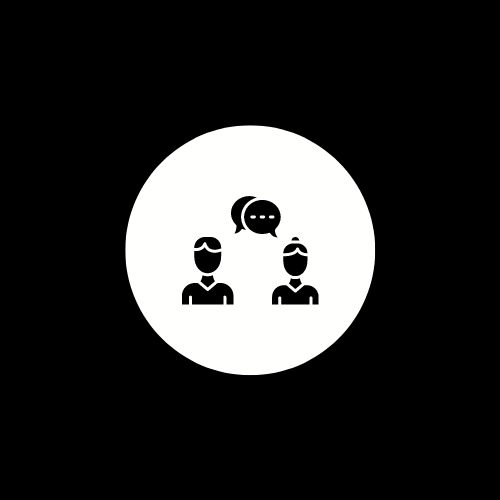
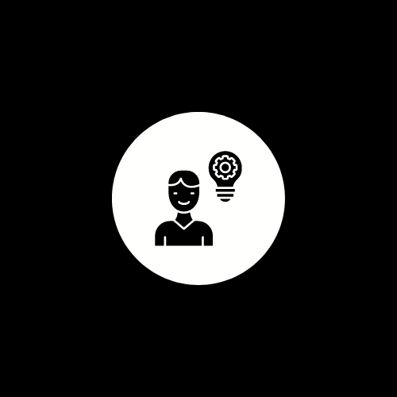

HABILIDADES BLANDAS
- Comunicación efectiva: Soy capaz de expresar mis ideas y pensamientos de manera clara y concisa. Me esfuerzo por estructurar mis mensajes de forma que sean fácilmente comprensibles.
- Empatía: Tengo la habilidad de ponerme en el lugar de los demás y comprender sus perspectivas y sentimientos, lo que me permite interactuar de manera respetuosa y compasiva.
- Escucha activa: Presto atención a los detalles y valoro las opiniones y comentarios de los demás. Me aseguro de responder de manera reflexiva y considerada.
- Colaboración: Disfruto trabajando en equipo y siempre busco contribuir de manera positiva y constructiva a los objetivos comunes.
- Resolución de problemas: Puedo analizar situaciones, identificar problemas y proponer soluciones efectivas de manera eficiente.
- Adaptabilidad: Soy flexible y capaz de ajustarme a diferentes situaciones y contextos, siempre dispuesto a aprender y crecer a partir de nuevas experiencias.
- Pensamiento crítico: Evalúo la información de manera objetiva y crítica, formulando juicios y conclusiones bien fundamentadas.
- Creatividad: Tengo la capacidad de generar ideas originales y pensar fuera de lo común, aportando enfoques innovadores y soluciones creativas.
- Gestión del tiempo: Soy organizado y sé cómo priorizar tareas, manejando mi tiempo de manera eficiente para cumplir con mis responsabilidades.
- Actitud positiva: Mantengo una actitud optimista y entusiasta, incluso frente a desafíos, inspirando a los demás con mi enfoque proactivo.

HABILIDADES DURAS
- Programación: Tengo experiencia en lenguajes como Python, Java y JavaScript, así como en el desarrollo de aplicaciones web y móviles.
- Análisis de Datos: Soy competente en análisis de datos utilizando herramientas como Excel, SQL y Python, con capacidad para interpretar grandes conjuntos de datos y extraer insights significativos.
- Diseño Gráfico: Utilizo herramientas como Figma y Canva para crear diseños gráficos profesionales y atractivos para diversos proyectos.
- Gestión de Proyectos: He liderado proyectos utilizando metodologías ágiles como Scrum para garantizar la entrega oportuna y de alta calidad.
- Desarrollo Web: Tengo experiencia en el desarrollo front-end y back-end, utilizando tecnologías como HTML, CSS, React y Node.js para crear sitios web dinámicos y funcionales.
- Gestión de Bases de Datos: He trabajado con bases de datos relacionales y no relacionales, incluyendo MySQL y MongoDB, realizando tareas como diseño de esquemas, consultas y optimización de rendimiento.
- Automatización de Procesos: Utilizo herramientas como Selenium y scripts en Python para automatizar tareas repetitivas, aumentando la eficiencia y reduciendo errores en los procesos.
- Idiomas: Tengo un nivel avanzado de inglés, tanto en habilidades de escritura como de conversación, lo que me permite comunicarme efectivamente en entornos internacionales.
- Soporte Técnico: Poseo experiencia en brindar soporte técnico a usuarios, resolviendo problemas de hardware y software de manera eficiente y profesional.
- Diseño de Experiencia de Usuario (UX): Utilizo Figma para diseñar interfaces de usuario intuitivas y centradas en el usuario, garantizando una experiencia positiva para los usuarios finales.